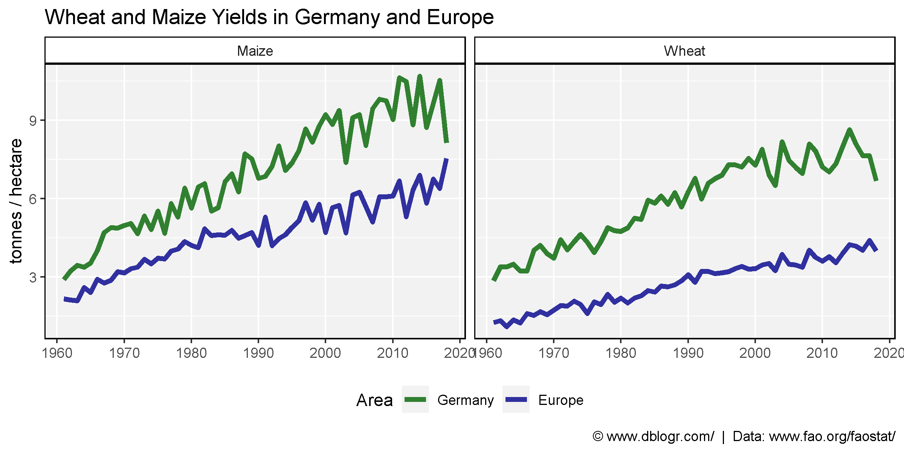
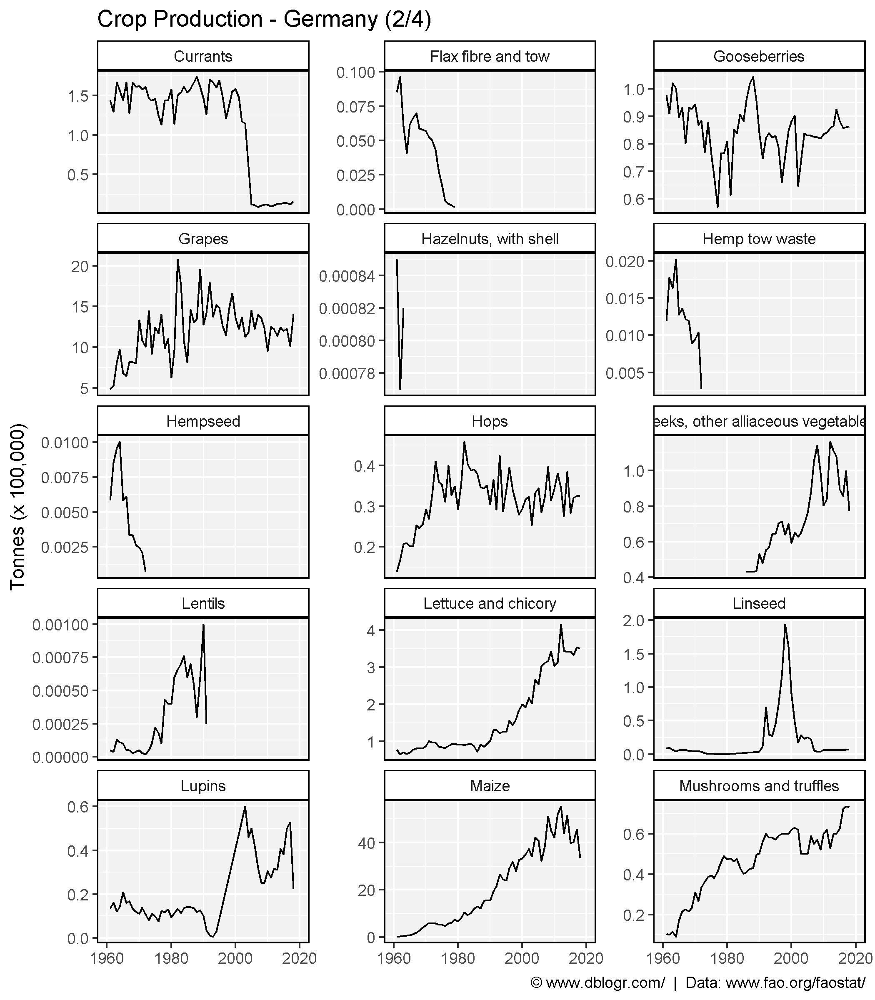
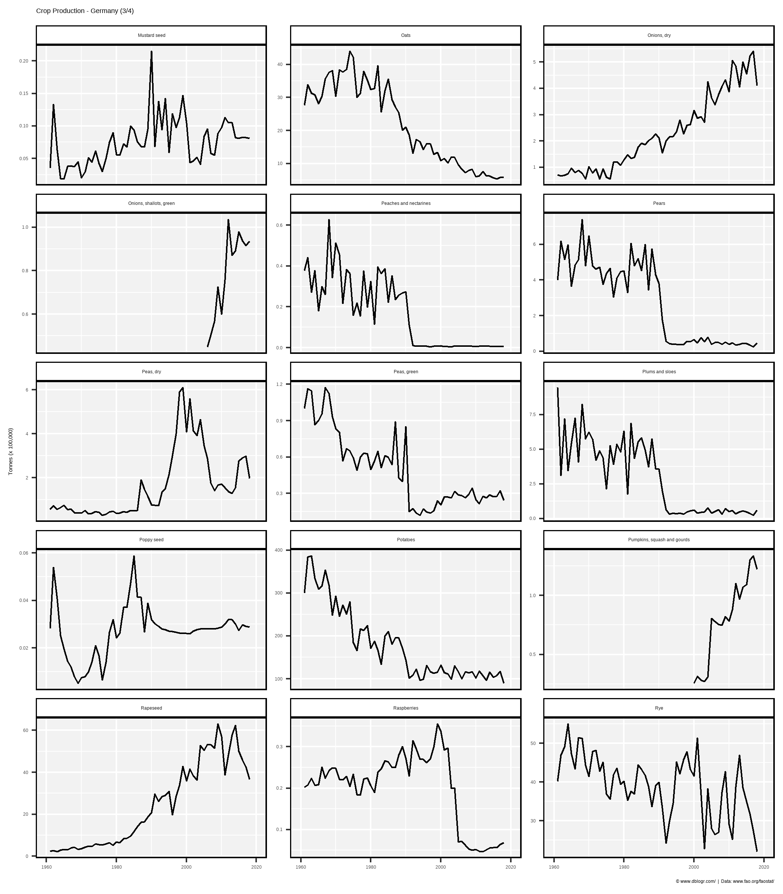
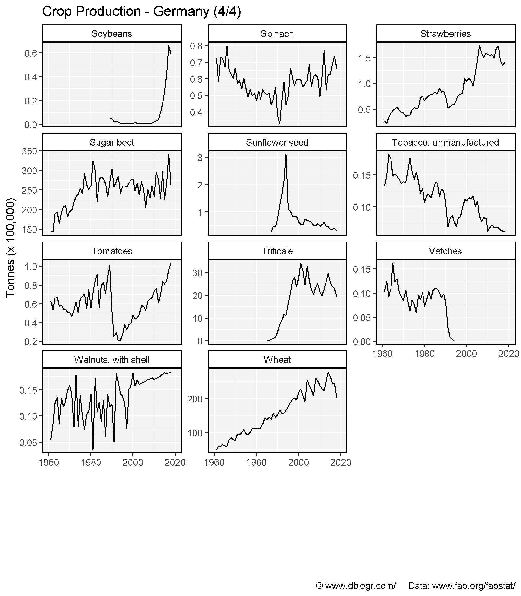

All Countries
# Prep data
colors <- c("darkgreen", "darkred", "darkgoldenrod2")
xx <- agData_FAO_Crops %>%
filter(Area == "Germany")
crops <- unique(xx$Crop)
# Plot
pdf("crops_germany_fao.pdf", width = 12, height = 4)
for(i in crops) {
xi <- xx %>% filter(Crop == i)
print(ggplot(xi, aes(x = Year, y = Value, color = Measurement)) +
geom_line(size = 1.5, alpha = 0.8) +
facet_wrap(. ~ Measurement, scales = "free_y", ncol = 3) +
scale_color_manual(values = colors) +
scale_x_continuous(breaks = seq(1960, 2020, by = 5) ) +
theme_agData(legend.position = "none",
axis.text.x = element_text(angle = 90, hjust = 1, vjust = 0.5)) +
labs(title = i, y = NULL, x = NULL,
caption = "\xa9 www.dblogr.com/ | Data: FAOSTAT") )
}
dev.off()## png
## 2# Prep data
xx <- agData_FAO_Crops %>%
filter(Area %in% c("Germany", "Europe"), Crop %in% c("Maize", "Wheat"),
Measurement == "Yield") %>%
mutate(Area = factor(Area, levels = c("Germany", "Europe")))
# Plot
mp <- ggplot(xx, aes(x = Year, y = Value, color = Area)) +
geom_line(alpha = 0.8, size = 1.5) +
facet_grid(.~Crop, scales = "free_y") +
scale_color_manual(values = c("darkgreen", "darkblue")) +
scale_x_continuous(breaks = seq(1960, 2020, 10), minor_breaks = NULL) +
theme_agData() + theme(legend.position = "bottom") +
labs(title = "Wheat and Maize Yields in Germany and Europe",
caption = "\xa9 www.dblogr.com/ | Data: www.fao.org/faostat/",
x = NULL, y = "tonnes / hectare")
ggsave("crops_germany_01.png", mp, width = 8, height = 4)
# Prep data
xx <- agData_FAO_Crops %>%
filter(Area == "Germany", Measurement == "Production")
# Plot
ggcropplot <- function(x) {
ggplot(xx, aes(x = Year, y = Value / 1000000)) +
geom_line() +
scale_x_continuous(limits = c(1960, 2020),
breaks = seq(1960, 2020, 20),
minor_breaks = seq(1960, 2020, 10)) +
theme_agData() +
theme(legend.position = "none") +
labs(caption = "\xa9 www.dblogr.com/ | Data: www.fao.org/faostat/",
y = "Million Tonnes", x = NULL)
}# Plot
mp1 <- ggcropplot(xx) +
facet_wrap_paginate(Crop~., scales = "free_y", ncol = 3, nrow= 5, page = 1) +
labs(title = "Crop Production - Germany (1/4)")
mp2 <- ggcropplot(xx) +
facet_wrap_paginate(Crop~., scales = "free_y", ncol = 3, nrow= 5, page = 2) +
labs(title = "Crop Production - Germany (2/4)")
mp3 <- ggcropplot(xx) +
facet_wrap_paginate(Crop~., scales = "free_y", ncol = 3, nrow= 5, page = 3) +
labs(title = "Crop Production - Germany (3/4)")
mp4 <- ggcropplot(xx) +
facet_wrap_paginate(Crop~., scales = "free_y", ncol = 3, nrow= 5, page = 4) +
labs(title = "Crop Production - Germany (4/4)")
ggsave("crops_germany_02.png", mp1, width = 7, height = 8)
ggsave("crops_germany_03.png", mp2, width = 7, height = 8)
ggsave("crops_germany_04.png", mp3, width = 7, height = 8)
ggsave("crops_germany_05.png", mp4, width = 7, height = 8)



© Derek Michael Wright www.dblogr.com/